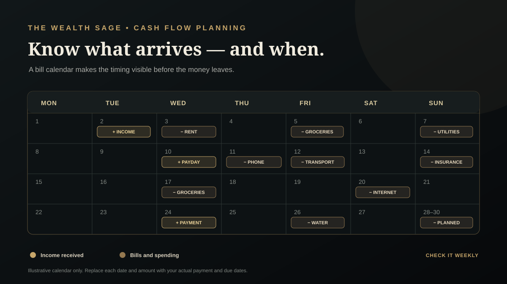
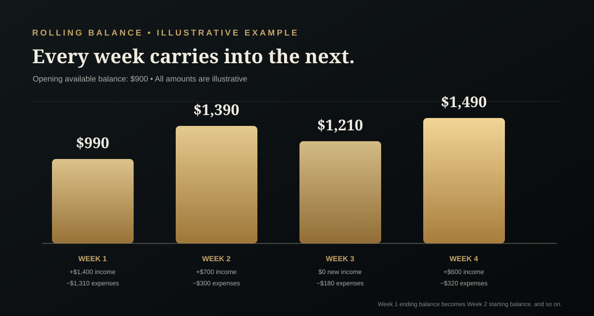

Many people plan their money by month: total income on one side, total bills and spending on the other. That is useful, but it can hide a timing problem. Your income may be enough for the month and still arrive after rent, insurance, or another important payment is due.
A cash flow calendar is a date-based view of the money expected to enter and leave your accounts. It records when income becomes available, when bills are due, and what your balance may look like after each transaction. It complements a budget; it does not replace one.
What Is a Cash Flow Calendar?
A cash flow calendar combines two simple records:
- A date list: each expected deposit, bill, transfer, and planned expense is placed on the date it is expected to happen.
- A running balance: the amount available after each listed transaction is added or subtracted from the previous balance.
The Consumer Financial Protection Bureau recommends listing what each bill is for, its amount, and its due date, then placing the calendar somewhere you can review it weekly. Its cash-flow budget tool also asks people to record a beginning balance, add income, subtract expenses, and carry the ending balance into the next week. A calendar applies the same logic to the dates that matter in your own month.
Cash Flow Calendar vs. Monthly Budget
They answer different questions, and most households benefit from using both.
| Monthly budget | Cash flow calendar |
|---|---|
| Groups money by category, such as housing, food, transport, and saving. | Places each deposit and payment on the date it is expected. |
| Shows whether planned spending fits the income available for the period. | Shows whether enough cash is available when a payment needs to clear. |
| Helps decide how much to allocate to each priority. | Helps decide when to hold, move, or spend the available cash. |
For example, a budget might show that rent and groceries are affordable across the month. The calendar can still reveal that rent is due on the 1st while the next paycheck is not expected until the 5th. The monthly totals can balance even when the dates do not.
Step 1: Start With the Money Actually Available
Write down the balance you can use at the beginning of the calendar period. Check your bank's available balance and account activity rather than relying on a remembered figure. Account for pending card purchases, scheduled transfers, and payments that have already been initiated so you do not count the same money twice.
If you use more than one account to pay bills, decide which account the calendar covers. You can make a separate calendar for each account or one household calendar that clearly shows which account each transaction uses. Avoid adding balances that are not available for the bills you are planning.
Step 2: Add Every Income Date
Record each payday, benefit payment, client deposit, commission, or other source of money on the date it is expected to become available. Include the amount you expect to receive after deductions when that is the money you can actually spend.
Keep uncertain income visibly separate from confirmed deposits. An invoice that has been sent is not the same as cash in your account. You can list it as a forecast, but do not use it to approve a payment that must be covered before the money arrives.
Step 3: Add Bills and Their Due Dates
Gather recent statements, invoices, account notices, and provider apps. For each bill, record:
- The provider or bill name.
- The amount due, or a reasonable estimate if it changes.
- The due date and the date the money is actually scheduled to leave your account.
- The account or payment method that will be used.
Include rent or mortgage payments, utilities, phone and internet, insurance, debt minimums, subscriptions, childcare, and any other recurring commitment. If a provider uses automatic payment, record the scheduled withdrawal date—not only the date printed on an old statement. Check how weekends and public holidays affect the actual processing date; do not assume every payment moves in the same way.
Step 4: Add Everyday and Irregular Spending
A calendar that includes only fixed bills can still give a misleading picture. Add groceries, fuel or transport, medication, school costs, and other spending that is likely to happen before the next income arrives. You do not need to predict every coffee or small purchase perfectly. Use a realistic allowance and update it as actual spending happens.
Also include predictable but non-monthly costs when they fall due: annual renewals, car maintenance, gifts, or planned travel. If you save for those costs gradually, the transfer into the relevant savings pot should appear in your plan. Our guide to Sinking Funds explains how to prepare for those expenses before the due date.
Avoid double-counting card spending. Choose one consistent method. You can record each card purchase on the date you make it and then avoid counting the full card payment as a second expense in the same calendar. Or, if you only track the bank account's cash leaving date, record the card payment as the outflow and track the purchase categories separately in your spending record. Do not count both the purchase and the later settlement as two separate uses of the same money.
Step 5: Put Transactions in Date Order and Calculate the Balance
Start with the opening available balance. Add each deposit when it is expected to become available and subtract each payment or planned expense when the money is expected to leave. The result after each line is your projected running balance:
Use the next example to see how the calendar works. The dates and amounts are illustrative and use U.S. dollars for simple arithmetic; they are not a suggested spending plan.
| Date | Transaction | In | Out | Balance |
|---|---|---|---|---|
| Aug 1 | Opening available balance | — | — | $900 |
| Aug 2 | Client payment | +$1,400 | — | $2,300 |
| Aug 3 | Rent | — | −$1,100 | $1,200 |
| Aug 5 | Groceries | — | −$120 | $1,080 |
| Aug 7 | Electricity | — | −$90 | $990 |
| Aug 10 | Paycheck | +$700 | — | $1,690 |
| Aug 11 | Phone | — | −$65 | $1,625 |
| Aug 12 | Transport | — | −$75 | $1,550 |
| Aug 14 | Car insurance | — | −$160 | $1,390 |
| Aug 17 | Groceries | — | −$140 | $1,250 |
| Aug 20 | Internet | — | −$40 | $1,210 |
| Aug 24 | Client payment | +$600 | — | $1,810 |
| Aug 26 | Water | — | −$70 | $1,740 |
| Aug 28 | Other planned expenses | — | −$180 | $1,560 |
| Aug 30 | Planned savings transfer | — | −$70 | $1,490 |
In this example, the calendar starts with $900, records $2,700 in income, and records $2,110 in spending and savings transfers. The projected ending balance is $1,490. More importantly, the calendar shows the balance at the points when the main payments happen—not only the final monthly total.

Step 6: Look for the Lowest Projected Balance
Do not look only at the last day of the month. Review the lowest projected balance between today and the next reliable income date. That is often the point where timing pressure is greatest.
If the calendar predicts that an important bill will leave the account before enough money arrives, you have identified a cash-flow gap. It is a planning signal—not permission to overdraw. Check whether the due date can be changed, whether the provider offers an approved payment arrangement, whether a discretionary purchase can wait, or whether money can be set aside from an earlier deposit. Contact the provider before the due date when possible; never assume a payment date can be moved until the provider confirms it.
If your income changes from week to week, a conservative baseline and an income buffer can make this calendar more reliable. The first guide in this series explains how to budget with irregular income.
Step 7: Review the Calendar Every Week
A calendar is useful only if it stays current. Choose one regular time each week to:
- Replace forecast income with the amount that actually arrived.
- Mark bills and purchases that cleared, and update amounts that changed.
- Add new bills, due-date changes, and one-off expenses.
- Recalculate the projected balance through the next payday or deposit.
- Check the lowest balance and decide whether any action is needed.
Keep the next four to six weeks visible, then roll the calendar forward. At the start of a new month, add upcoming renewals and other known costs so they do not disappear just because they are not monthly bills.
Common Cash Flow Calendar Mistakes
Using the statement date instead of the payment date
A bill's statement date, due date, automatic withdrawal date, and bank posting date may be different. Record the date that actually affects the available balance, and confirm uncertain timing with the provider or bank.
Counting expected income too early
An invoice, commission estimate, or verbal promise is not the same as cleared money. Label estimates as forecasts and use a cautious scenario when planning a payment that cannot wait.
Leaving out everyday spending
Rent may be the largest bill, but small purchases add up. Use realistic allowances for food, transportation, medicine, and other regular needs.
Counting a credit card purchase twice
Record card purchases and the later card settlement consistently. If both appear as expenses in the same cash-flow plan, the same purchase can be counted twice.
Forgetting savings transfers and periodic costs
Money moved to savings is no longer available for current bills. Include planned transfers and use sinking funds for known irregular expenses.
FAQ: Cash Flow Calendars
What is the difference between a bill calendar and a cash flow calendar?
A bill calendar records what is due and when. A cash flow calendar adds income dates and a projected running balance, so you can see how each payment affects the money available after it happens.
How far ahead should I plan?
Keep at least the next four weeks visible, and extend the view when you know about larger or seasonal bills. The most useful period is long enough to include the next paydays and the commitments that must be paid before them.
Should I use a daily or weekly calendar?
Use daily entries when payments arrive on different dates or the timing is tight. A weekly summary may be enough when income and bills are predictable. You can keep daily transactions and review the ending balance weekly.
What if a bill is due before payday?
Check the amount and the date the money will actually leave. Contact the provider to ask whether a different due date or payment arrangement is available, and review whether the bill can be funded from money already set aside. Do not rely on an unconfirmed date change or an income payment that has not arrived.
Do I include savings in a cash flow calendar?
Yes. Include a planned transfer to savings on the date you intend to make it. That helps ensure the calendar does not treat the same dollars as available for both spending and saving.
Can a cash flow calendar replace a budget?
No. A calendar helps you manage timing; a budget helps you decide how much to allocate to categories and priorities. Use them together. If you want every dollar assigned a role, read our guide to Zero-Based Budgeting.
Sources & Further Reading
Consumer Financial Protection Bureau — Bill Calendar: Know What You Owe and When It’s Due
Consumer Financial Protection Bureau — Creating a Cash Flow Budget (PDF)
Penn State Extension — My Monthly Spending Plan
Educational information only. Examples are illustrative and use U.S. dollars for arithmetic clarity. Payment processing, bill due dates, banking rules, and consumer protections vary by country and provider.